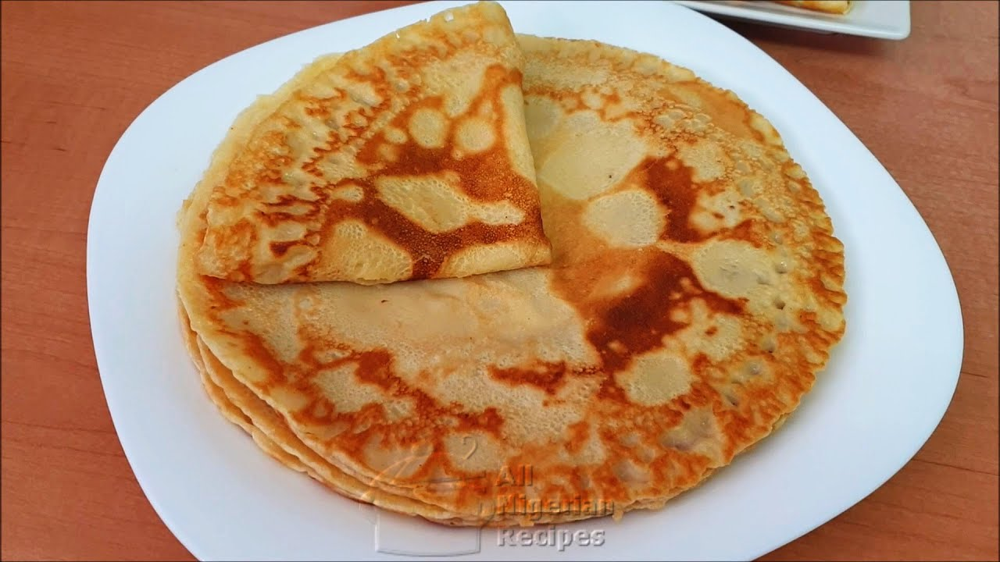

Nigerian Pancakes

Description
Ingredients
- 2 cups of all-purpose flour
- 1/2 cup of granulated sugar
- 1/4 teaspoon of nutmeg
- A pinch of salt
- 1 cup of warm water
- 1/4 cup of milk
- 1 teaspoon of vanilla extract
- Vegetable oil for deep frying
- Powdered sugar or cinnamon sugar for dusting (optional)
Steps
- Sift the dry Ingredients in a large mixing bowl (flour, nutmeg, salt)
- Add the granulated sugar to the dry ingredients and mix them together
- In a separate bowl, mix the warm water, milk, and vanilla extract
- Gradually pour the wet ingredients into the dry ingredients
- Use a spoon or spatula to stir everything together until you have a smooth, thick batter
- Make sure there are no lumps in the batter
- In a frying-pan, heat enough cooking oil for frying
- Using a spoon, scoop small amounts of the batter and gently drop them into the hot oil
- Fry the pancakes until they turn golden brown, on each side
- Place the fried pancakes on paper towels to drain any excess oil
- Sprinkle the pancakes with powdered sugar or cinnamon sugar
- Your pancakes is ready to be served. Nigerian pancakes are best enjoyed warm
Back to Home